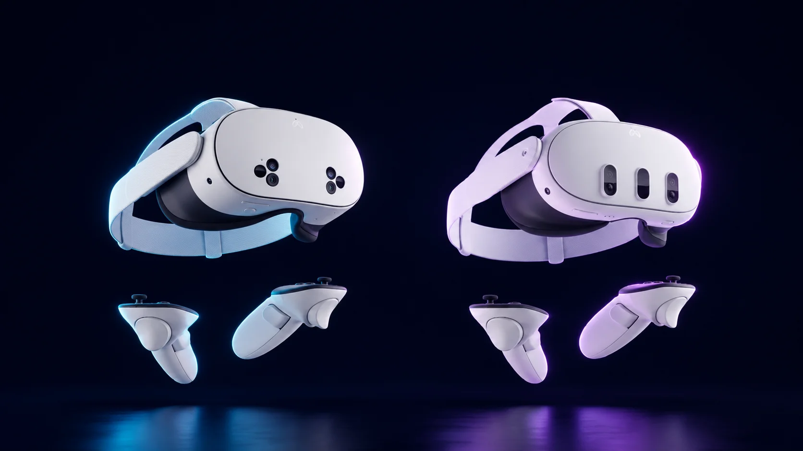

Meta Quest 3 vs 3S: which one should you buy?

For most people buying their first headset, the Quest 3S. It runs every Quest game on the same chip for $250 less. Pay for the Quest 3 if image sharpness matters to you, for reading text, watching video or long sessions, or if mixed reality is a big part of why you want VR.
The differences side by side
| Quest 3S | Quest 3 | |
|---|---|---|
| US price | $349.99 (128GB) · $449.99 (256GB) | $599.99 (512GB) |
| Lenses | Fresnel | Pancake |
| Resolution per eye | 1832×1920 | 2064×2208 |
| Field of view | 96° × 90° | 110° × 96° |
| Lens spacing (IPD) | 3 fixed positions: 58, 63 and 68 mm | Any value from 58 to 71 mm |
| Depth sensor | No | Yes |
| Headphone jack | No | Yes |
| Battery, on average | About 2.5 hours | About 2.2 hours |
| Chip and RAM | Snapdragon XR2 Gen 2 · 8GB | Snapdragon XR2 Gen 2 · 8GB |
| Games | The whole Quest library | The same library |
Prices are Meta's US list prices, which went up in April 2026; they drop during sales. Specs from UploadVR's spec sheet.
What the extra $250 buys
Mostly the lenses. The Quest 3's pancake lenses keep the image sharp almost to the edges. The 3S's Fresnel lenses, carried over from the Quest 2 era, look great in the center and soften as your eyes move outward. In fast games you may hardly notice. Reading text, watching a film or anything with fine detail, you notice within minutes.
Then mixed reality. The Quest 3 has better passthrough, the cameras that show you your room, plus a dedicated depth sensor; the 3S estimates depth in software. If you want games and apps placed over your real living room, that gap matters. If you mostly want to be somewhere else, it matters much less.
Lens spacing is the difference most people miss. The 3S has three fixed positions (58, 63 and 68 mm), while the Quest 3 adjusts continuously from 58 to 71 mm. One of the three fits most people well enough. If the distance between your pupils falls far from all three, the Quest 3 will look sharper and be easier on your eyes. An optician can measure it in a minute.
And a small one: the Quest 3 has a headphone jack. With the 3S you use the built-in speakers or Bluetooth headphones.
What's the same
The chip, the 8GB of RAM, the Touch Plus controllers and the game library. As of November 2026 there is no Quest 3 exclusive: Beat Saber, Batman: Arkham Shadow and everything else run on both. Both connect to a gaming PC for PC VR, with a cable or wirelessly. The 3S even lasts a little longer per charge, about 2.5 hours against 2.2 on average (more in our battery guide).
128GB or 256GB?
128GB fills up quickly once you install a few big games, and there's no way to add storage later. If you can stretch to $449.99, the 256GB 3S is the comfortable pick. The Quest 3 only comes in 512GB.
Should you wait for something newer?
Meta announced its next headset at Connect in September 2026: Meta VR Glasses, a much lighter design with micro-OLED displays, shipping in spring 2027 for about $1,300. Its field of view is narrower than the Quest 3's and it doesn't come with controllers. It's a premium product, not a replacement for either of these two. Meta hasn't announced a new Quest at these prices, so if you want to play now, waiting means waiting for something that doesn't exist yet.
Which one to buy
- The Quest 3S, if it's your first headset, the budget is tight, and you mostly see yourself playing games in sessions of an hour or so.
- The Quest 3, if you'll read, watch video or wear it for long stretches, if mixed reality is what draws you in, or if your pupil distance falls far from the 3S's three positions.
Where to buy
Check the Quest 3S price → Check the Quest 3 price →
Answer 7 quick questions and get a personalized match in 60 seconds.
Take the VR Finder quiz →Some links on vr.ar are affiliate links: if you buy through them we may earn a commission at no extra cost to you, which helps keep vr.ar free. Links to Amazon are plain searches and earn us nothing. Prices and specifications are subject to change. See our Privacy Policy.